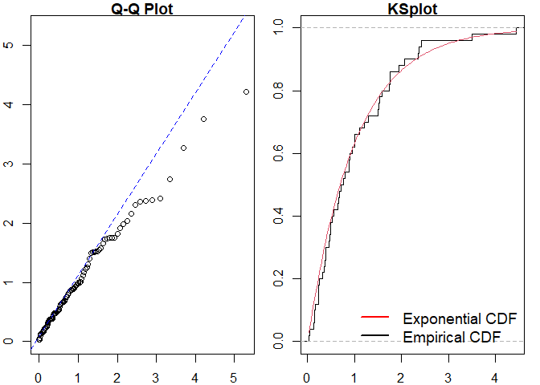

ppdiag is an R package which provides a collection of tools which can be used to assess the fit of temporal point processes to data.
These currently include:
- Simulating data from a specified point process
- Fitting a specified point process model to data
- Evaluating the fit of a point process model to data using several diagnostic tools
Installation
You can install the released version of ppdiag from CRAN with:
install.packages("ppdiag")The current development version of this package is available from GitHub with:
# install.packages("remotes")
remotes::install_github("OwenWard/ppdiag")Example
To illustrate some of the basic functionality of this package, we can simulate data from a specified Hawkes process and examine our diagnostic results when we fit a homogeneous Poisson process to this data.
library(ppdiag)
hp_obj <- pp_hp(lambda0 = 0.2, alpha = 0.35, beta = 0.8)
sim_hp <- pp_simulate(hp_obj, end = 200)
sim_hp
#> [1] 1.275239 4.783765 5.594645 8.598805 12.615358 13.236031
#> [7] 16.646178 17.963423 18.111810 22.084071 26.666076 34.308807
#> [13] 34.356333 34.495016 34.951780 35.092074 36.397702 37.473565
#> [19] 37.846293 37.999420 54.822306 54.960122 55.721565 56.161485
#> [25] 56.825700 57.272058 59.441202 67.259184 67.951046 73.067622
#> [31] 73.376321 73.864017 74.351076 78.675743 84.520527 86.082185
#> [37] 86.547380 89.036582 99.411569 100.220569 101.941447 104.265342
#> [43] 106.553315 115.496473 126.077235 126.679327 126.705392 130.829836
#> [49] 134.226466 135.613464 135.633740 149.809218 156.366308 156.732731
#> [55] 157.273463 160.788531 161.764239 166.976330 187.590412 187.737997
#> [61] 187.994724 195.153693We can readily evaluate the fit of a homogeneous Poisson process to this data.
est_hpp <- fithpp(sim_hp)
est_hpp
#> Homogeneous Poisson Process
#> lambda
#> events 1.275239 4.783765 5.594645 8.598805 12.61536 13.23603 16.64618 17.96342 18.11181 22.08407 26.66608 34.30881 34.35633 34.49502 34.95178 35.09207 36.3977 37.47357 37.84629 37.99942 54.82231 54.96012 55.72156 56.16149 56.8257 57.27206 59.4412 67.25918 67.95105 73.06762 73.37632 73.86402 74.35108 78.67574 84.52053 86.08219 86.54738 89.03658 99.41157 100.2206 101.9414 104.2653 106.5533 115.4965 126.0772 126.6793 126.7054 130.8298 134.2265 135.6135 135.6337 149.8092 156.3663 156.7327 157.2735 160.7885 161.7642 166.9763 187.5904 187.738 187.9947 195.1537
pp_diag(est_hpp, events = sim_hp)
#>
#> Raw residual: -7.105427e-15
#> Pearson residual: 1.421085e-14
#>
#> One-sample Kolmogorov-Smirnov test
#>
#> data: r
#> D = 0.20838, p-value = 0.007712
#> alternative hypothesis: two-sided
#> Raw residual: -0.002513104
#> Pearson residual: 0.2040545
#>
#> One-sample Kolmogorov-Smirnov test
#>
#> data: r
#> D = 0.075428, p-value = 0.846
#> alternative hypothesis: two-sidedMarkov Modulated Hawkes Process Example
This is particularly useful for more complex point processes, such as the Markov Modulated Hawkes Process (MMHP). We can simulate events from this model and examine the fit of simpler point processes to this data.
Q <- matrix(c(-0.2, 0.2, 0.1, -0.1), ncol = 2, byrow = TRUE)
mmhp_obj <- pp_mmhp(Q, delta = c(1 / 3, 2 / 3),
lambda0 = 0.2,
lambda1 = .75,
alpha = 0.4,
beta = 0.8)
mmhp_obj
#> Markov Modulated Hawkes Process
#> lambda0 0.2
#> lambda1 0.75
#> alpha 0.4
#> beta 0.8
#> Q -0.2 0.1 0.2 -0.1
#> delta 0.3333333 0.6666667
mmhp_events <- pp_simulate(mmhp_obj, n = 50)We can easily fit a homogeneous Poisson process and visualise the goodness of fit.

#>
#> Raw residual: -1
#> Pearson residual: -1.270479
#>
#> One-sample Kolmogorov-Smirnov test
#>
#> data: r
#> D = 0.30169, p-value = 0.000156
#> alternative hypothesis: two-sidedSimilarly for a Hawkes process.

#> Raw residual: -0.3695538
#> Pearson residual: -1.850818
#>
#> One-sample Kolmogorov-Smirnov test
#>
#> data: r
#> D = 0.081193, p-value = 0.87
#> alternative hypothesis: two-sidedWe can then compare to the true point process model.
pp_diag(mmhp_obj, mmhp_events$events)
Getting help and contributing
Please file any issues here. Similarly, we would be delighted if anyone would like to contribute to this package (such as adding other point processes, kernel functions). Feel free to take a look here and reach out with any questions.
References
- Sun et al., (2021). ppdiag: Diagnostic Tools for Temporal Point Processes. Journal of Open Source Software, 6(61), 3133, https://doi.org/10.21105/joss.03133
- Wu et al. (2021), Diagnostics and Visualization of Point Process Models for Event Times on a Social Network, In Applied Modeling Techniques and Data Analysis 1 (eds Y. Dimotikalis, A. Karagrigoriou, C. Parpoula and C.H. Skiadas). https://doi.org/10.1002/9781119821588.ch7